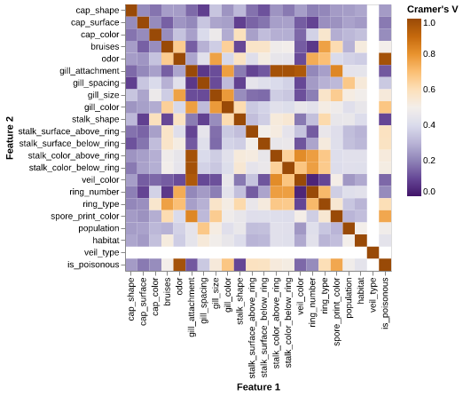
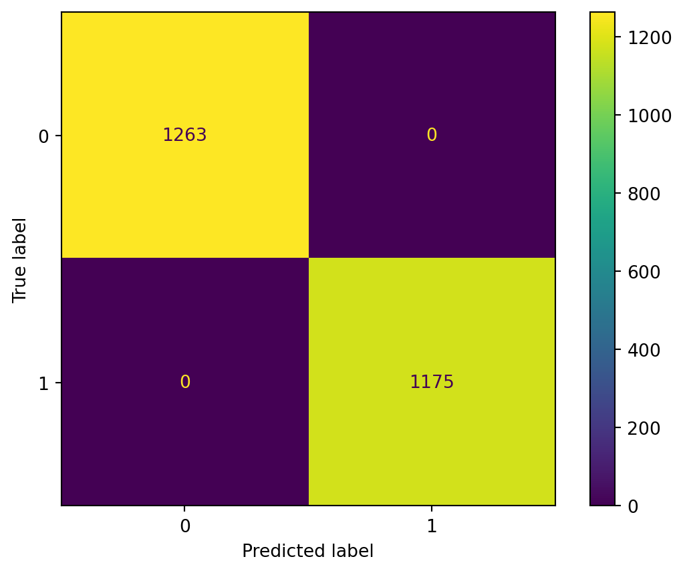

import requests
import zipfile
import pandas as pd
import numpy as np
import os
import altair as alt
import pandera.pandas as pa
alt.renderers.enable("png")
from sklearn.preprocessing import OneHotEncoder
from sklearn.model_selection import train_test_split
from sklearn.dummy import DummyClassifier
from sklearn.model_selection import cross_validate
from sklearn.pipeline import make_pipeline
from sklearn.svm import SVC
from sklearn.metrics import confusion_matrix, ConfusionMatrixDisplay
from scipy.stats import chi2_contingency
import itertools
from pathlib import PathPoisonous Mushroom Classification
Imports
Never forget to run imports first.
Summary
Here we attempt to build a classification model using a Support Vector Machine algorithm which can use physical characteristics of mushrooms to predict whether a North American mushroom from the Agaricus and Lepiota (Agaricaceae) family is edible or poisonous for human consumption. Our final classifier performed excellently on an unseen test data set, with precision and recall of 1.0 and an overall accuracy calculated to be 1.0. On the 2,438 test data observations, the model correctly predicted all 2,438. Although the model performs extremely well it has practical limitations, because it requires the correct identification of 20 different physical characteristics of a given mushroom in order for the corresponding prediction to be correct. We believe the model could be a powerful tool for preventing the misidentification of the Agaricus and Lepiota family of mushrooms, but further efforts to improve the practical implementation of the model for usage by the public would be very useful.
Introduction
The Agaricus and Lepiota (Agaricaceae) family of mushrooms, includes many of the common gilled mushrooms found and cultivated in urban and suburban North America (Lincoff, 1981, 500). The family includes the common cultivated mushroom (Agaricus bisporus), and some of the best edible mushrooms, but it also includes poisonous mushrooms and a few that are deadly(500). These mushrooms are sometimes found in forests, but many grow on lawns, in the compost, or along roadsides and grassy areas where they are readily accessible for human consumption (500). Accurate assessment of the edibility of these mushrooms is extremely important prior to consumption, however there is no simple rule for determining whether any example is poisonous or edible (500-505).
Here we ask if we can use a supervised machine learning algorithm to predict whether a given mushroom from the Agaricus and Lepiota family of mushrooms is edible or poisonous, based upon it’s physical characteristics. Answering this question is important because mushroom poisonings are common and the greatest risk factor for mushroom poisoning is the misidentification of poisonous species as edible, in particular by amateur mushroom foragers and immigrants (Diaz, 2016) If made accessible to the public in North America, accurate prediction of mushrooms in this family could prevent poisoning and support the safe consumption of common edible mushrooms.
Methods
Data
The data set used in this project includes hypothetical mushroom samples drawn from The Audobon Society Field Guide to North American Mushrooms by Gary Lincoff (1981, 500-525). It was sourced from the UCI Machine Learning Repository, and can be found here, specifically the file agarius-lepiota.data. It includes 8124 descriptions of hypothetical mushroom samples that correspond to 23 species of mushrooms in the Agaricus and Lepiota Family (Mushroom, 1981). Each row includes 22 categorical variables that are physical characteristics of the mushroom sample, including the odor, gill-spacing, gill-color, gill-size, population, habitat, etc, and is labelled as edible or poisonous.
Analysis
#adding the downloaded data to the data directory by code
# download data as zip and extract
url = "https://archive.ics.uci.edu/static/public/73/mushroom.zip"
response = requests.get(url)
with open("../data/raw/mushroom.zip", 'wb') as f:
f.write(response.content)
with zipfile.ZipFile("../data/raw/mushroom.zip", 'r') as zip_ref:
zip_ref.extractall("../data/raw")Data Validation Checks
'''Correct Data File Format Check'''
data_path = "../data/raw/agaricus-lepiota.data"
correct_exts = {".csv",".data"}
ext = os.path.splitext(data_path)[1].lower()
assert ext in correct_exts, (
f"[File format] '{data_path}' has extension '{ext}', "
f"expected one of {sorted(correct_exts)}."
)Data cleaning and wrangling
# Expected data column names
dataset_col_names = [
"class", "cap_shape", "cap_surface", "cap_color", "bruises", "odor",
"gill_attachment", "gill_spacing", "gill_size", "gill_color",
"stalk_shape", "stalk_root",
"stalk_surface_above_ring", "stalk_surface_below_ring",
"stalk_color_above_ring", "stalk_color_below_ring",
"veil_type", "veil_color",
"ring_number", "ring_type",
"spore_print_color", "population", "habitat"
]df = pd.read_csv(data_path, names=dataset_col_names)
df.head()| class | cap_shape | cap_surface | cap_color | bruises | odor | gill_attachment | gill_spacing | gill_size | gill_color | ... | stalk_surface_below_ring | stalk_color_above_ring | stalk_color_below_ring | veil_type | veil_color | ring_number | ring_type | spore_print_color | population | habitat | |
|---|---|---|---|---|---|---|---|---|---|---|---|---|---|---|---|---|---|---|---|---|---|
| 0 | p | x | s | n | t | p | f | c | n | k | ... | s | w | w | p | w | o | p | k | s | u |
| 1 | e | x | s | y | t | a | f | c | b | k | ... | s | w | w | p | w | o | p | n | n | g |
| 2 | e | b | s | w | t | l | f | c | b | n | ... | s | w | w | p | w | o | p | n | n | m |
| 3 | p | x | y | w | t | p | f | c | n | n | ... | s | w | w | p | w | o | p | k | s | u |
| 4 | e | x | s | g | f | n | f | w | b | k | ... | s | w | w | p | w | o | e | n | a | g |
5 rows × 23 columns
A preview of the first five rows of the raw dataset is shown in Table Table 1, which illustrates the categorical structure of all features prior to cleaning.
Data Validation Checks
'''No Duplicate Observations Check'''
duplicates = df.duplicated().sum()
assert duplicates == 0, (
f"Found {duplicates} full-row duplicates."
)'''Target follows expected distribution'''
actual_distribution = (
df["class"]
.value_counts(normalize=True)
.round(3)
.to_dict()
)
# As per dataset documentation, expected proportions for each target
expected_distribution = {'e': 0.518, 'p':0.482}
for cls, expected_prop in expected_distribution.items():
observed_prop = actual_distribution.get(cls, 0.0)
assert np.isclose(observed_prop, expected_prop, atol=0.01), (
f"Class '{cls}': observed proportion {observed_prop} "
f"differs from expected {expected_prop}."
)
print(
"[OK] Target distribution matches expected proportions "
"(within tolerance)."
)[OK] Target distribution matches expected proportions (within tolerance).'''Correct category levels check (i.e., no string mismatches or single values)'''
allowed_values = {
"class": ["e", "p"],
"cap_shape": ["b", "c", "x", "f", "k", "s"],
"cap_surface": ["f", "g", "y", "s"],
"cap_color": ["n", "b", "c", "g", "r", "p", "u", "e", "w", "y"],
"bruises": ["t", "f"],
"odor": ["a", "l", "c", "y", "f", "m", "n", "p", "s"],
"gill_attachment": ["a", "d", "f", "n"],
"gill_spacing": ["c", "w", "d"],
"gill_size": ["b", "n"],
"gill_color": ["k", "n", "b", "h", "g", "r", "o", "p", "u", "e", "w", "y"],
"stalk_shape": ["e", "t"],
"stalk_root": ["b", "c", "u", "e", "z", "r", "?"], # ? = missing
"stalk_surface_above_ring": ["f", "y", "k", "s"],
"stalk_surface_below_ring": ["f", "y", "k", "s"],
"stalk_color_above_ring": ["n", "b", "c", "g", "o", "p", "e", "w", "y"],
"stalk_color_below_ring": ["n", "b", "c", "g", "o", "p", "e", "w", "y"],
"veil_type": ["p", "u"],
"veil_color": ["n", "o", "w", "y"],
"ring_number": ["n", "o", "t"],
"ring_type": ["c", "e", "f", "l", "n", "p", "s", "z"],
"spore_print_color": ["k", "n", "b", "h", "r", "o", "u", "w", "y"],
"population": ["a", "c", "n", "s", "v", "y"],
"habitat": ["g", "l", "m", "p", "u", "w", "d"]
}
for col, allowed in allowed_values.items():
invalid = set(df[col].dropna().unique()) - set(allowed)
assert not invalid, f"{col} has invalid values: {invalid}"# Basic missingness summary (raw data)
df.isna().sum()class 0
cap_shape 0
cap_surface 0
cap_color 0
bruises 0
odor 0
gill_attachment 0
gill_spacing 0
gill_size 0
gill_color 0
stalk_shape 0
stalk_root 0
stalk_surface_above_ring 0
stalk_surface_below_ring 0
stalk_color_above_ring 0
stalk_color_below_ring 0
veil_type 0
veil_color 0
ring_number 0
ring_type 0
spore_print_color 0
population 0
habitat 0
dtype: int64# Encoded missingness via '?':
(df == "?").sum()class 0
cap_shape 0
cap_surface 0
cap_color 0
bruises 0
odor 0
gill_attachment 0
gill_spacing 0
gill_size 0
gill_color 0
stalk_shape 0
stalk_root 2480
stalk_surface_above_ring 0
stalk_surface_below_ring 0
stalk_color_above_ring 0
stalk_color_below_ring 0
veil_type 0
veil_color 0
ring_number 0
ring_type 0
spore_print_color 0
population 0
habitat 0
dtype: int64# Convert "?" markers to proper NaN in case any other should occur apart from the known `stalk_root`_ just thinking real-world applications
df = df.replace("?", np.nan)# Changing the target to numeric values: poisonous=1, edible=0
df["is_poisonous"] = df["class"].map({"p": 1, "e": 0})# Drop rows with NaN in the target column (none expected, but safe)
df = df.dropna(subset=["is_poisonous"])# Drop stalk_root column due to missing values and original target column "class" because numeric column of target values "is_poisonous" added to replace it
df.drop(columns=['stalk_root', 'class'], inplace=True)# Check remaining missing values
df.isna().sum()cap_shape 0
cap_surface 0
cap_color 0
bruises 0
odor 0
gill_attachment 0
gill_spacing 0
gill_size 0
gill_color 0
stalk_shape 0
stalk_surface_above_ring 0
stalk_surface_below_ring 0
stalk_color_above_ring 0
stalk_color_below_ring 0
veil_type 0
veil_color 0
ring_number 0
ring_type 0
spore_print_color 0
population 0
habitat 0
is_poisonous 0
dtype: int64# Validate cleaned column names
# Given that the dataset we read in for this model did not include headers, we assigned the names and hence encoded the correct column names initially upon read in. Here, I confirm the column names match expectations after dropping "stalk_root" and changing the name of "class" to "is_poisonous"
expected_cols_cleaned = [
col for col in dataset_col_names if col not in ["stalk_root", "class"]
] + ["is_poisonous"]
assert list(df.columns) == expected_cols_cleaned, \
"The dataframe does not have the expected column names after cleaning."
print("[OK] Cleaned column names validated.")[OK] Cleaned column names validated.# Pandera: validate cleaned dataframe schema
# - All feature columns are strings
# - Target column is integer and only takes values {0, 1}
schema = pa.DataFrameSchema(
{
# All predictor/feature columns: stored as strings
**{
col: pa.Column(str)
for col in expected_cols_cleaned
if col != "is_poisonous"
},
# Target column: must be integer and in the set {0, 1}
"is_poisonous": pa.Column(
int,
pa.Check.isin([0, 1]),
),
}
)
# Validate the cleaned dataframe against the schema
schema.validate(df, lazy=True)
print(
"[OK] Pandera schema validation passed:\n"
" - all feature columns are string-typed\n"
" - 'is_poisonous' contains only 0/1 as expected."
)[OK] Pandera schema validation passed:
- all feature columns are string-typed
- 'is_poisonous' contains only 0/1 as expected.Interpretation of Outlier / Anomalous Value Checks
All features in this dataset are categorical, so traditional numeric outlier checks (e.g., detecting extreme continuous values) do not apply. Instead, the relevant “anomalous values” for categorical data are unexpected or invalid category levels.
We addressed this by validating every categorical column against the official list of allowed levels from the UCI dataset documentation. Since all observed category values matched their expected sets, we conclude that no anomalous values are present in this dataset.
# Pandera: validate cleaned dataframe schema
# - Ensure there are no completely empty rows
# - all columns must be present
# - enforces no missing in `is_poisonous`
# - enforces <= 5% missingness in any other column
mushroom_schema = pa.DataFrameSchema(
{
"cap_shape": pa.Column(str),
"cap_surface": pa.Column(str),
"cap_color": pa.Column(str),
"bruises": pa.Column(str),
"odor": pa.Column(str),
"gill_attachment": pa.Column(str),
"gill_spacing": pa.Column(str),
"gill_size": pa.Column(str),
"gill_color": pa.Column(str),
"stalk_shape": pa.Column(str),
"stalk_surface_above_ring": pa.Column(str),
"stalk_surface_below_ring": pa.Column(str),
"stalk_color_above_ring": pa.Column(str),
"stalk_color_below_ring": pa.Column(str),
"veil_type": pa.Column(str),
"veil_color": pa.Column(str),
"ring_number": pa.Column(str),
"ring_type": pa.Column(str),
"spore_print_color": pa.Column(str),
"population": pa.Column(str),
"habitat": pa.Column(str),
"is_poisonous": pa.Column(
int,
pa.Check(
lambda s: s.isna().mean() == 0.0,
element_wise=False,
error="Target 'is_poisonous' contains missing values.",
),
nullable=False,
),
},
checks=[
# No empty observations: no row where *all* columns are missing
pa.Check(
lambda df: ~(df.isna().all(axis=1)).any(),
element_wise=False,
error="Empty rows found.",
),
# Missingness not beyond expected threshold (up to max 5% per column)
pa.Check(
lambda df: df.isna().mean().max() <= 0.05,
element_wise=False,
error="One or more columns exceed 5% missingness.",
),
],
)
# Validate the cleaned dataframe (will raise if check fails)
df = mushroom_schema.validate(df, lazy=True)EDA Before Data Splitting
df.head()| cap_shape | cap_surface | cap_color | bruises | odor | gill_attachment | gill_spacing | gill_size | gill_color | stalk_shape | ... | stalk_color_above_ring | stalk_color_below_ring | veil_type | veil_color | ring_number | ring_type | spore_print_color | population | habitat | is_poisonous | |
|---|---|---|---|---|---|---|---|---|---|---|---|---|---|---|---|---|---|---|---|---|---|
| 0 | x | s | n | t | p | f | c | n | k | e | ... | w | w | p | w | o | p | k | s | u | 1 |
| 1 | x | s | y | t | a | f | c | b | k | e | ... | w | w | p | w | o | p | n | n | g | 0 |
| 2 | b | s | w | t | l | f | c | b | n | e | ... | w | w | p | w | o | p | n | n | m | 0 |
| 3 | x | y | w | t | p | f | c | n | n | e | ... | w | w | p | w | o | p | k | s | u | 1 |
| 4 | x | s | g | f | n | f | w | b | k | t | ... | w | w | p | w | o | e | n | a | g | 0 |
5 rows × 22 columns
# Basic information
df.info()<class 'pandas.core.frame.DataFrame'>
RangeIndex: 8124 entries, 0 to 8123
Data columns (total 22 columns):
# Column Non-Null Count Dtype
--- ------ -------------- -----
0 cap_shape 8124 non-null object
1 cap_surface 8124 non-null object
2 cap_color 8124 non-null object
3 bruises 8124 non-null object
4 odor 8124 non-null object
5 gill_attachment 8124 non-null object
6 gill_spacing 8124 non-null object
7 gill_size 8124 non-null object
8 gill_color 8124 non-null object
9 stalk_shape 8124 non-null object
10 stalk_surface_above_ring 8124 non-null object
11 stalk_surface_below_ring 8124 non-null object
12 stalk_color_above_ring 8124 non-null object
13 stalk_color_below_ring 8124 non-null object
14 veil_type 8124 non-null object
15 veil_color 8124 non-null object
16 ring_number 8124 non-null object
17 ring_type 8124 non-null object
18 spore_print_color 8124 non-null object
19 population 8124 non-null object
20 habitat 8124 non-null object
21 is_poisonous 8124 non-null int64
dtypes: int64(1), object(21)
memory usage: 1.4+ MB# Data dimensions
df.shape(8124, 22)Data Splitting
We are trying to classify whether a mushroom is edible (0) or poisonous (1). Going to do a 70/30 train/test split due to the large and roughly equal proportions of edible and poisonous mushrooms.
A random state of 123 will ensure reproducibility when ran by subsequent users.
# Train–test split at the row level
# - Keeps all columns together in each split
# - Stratify on the target to preserve class balance
train_df, test_df = train_test_split(
df,
test_size=0.3,
random_state=123,
stratify=df["is_poisonous"],
)
print(
"Train df shape: ", train_df.shape,
"\nTest df shape: ", test_df.shape
)Train df shape: (5686, 22)
Test df shape: (2438, 22)# Build X/y for model training and evaluation from splits
X_train = train_df.drop(columns=["is_poisonous"])
y_train = train_df["is_poisonous"]
X_test = test_df.drop(columns=["is_poisonous"])
y_test = test_df["is_poisonous"]EDA After Data Splitting
# Sanity check: class balance in the training data
train_target_counts = train_df["is_poisonous"].value_counts()
train_target_prop = train_df["is_poisonous"].value_counts(normalize=True)
print("Training set class counts:")
print(train_target_counts.rename(index={0: "edible (0)", 1: "poisonous (1)"}))
print("\nTraining set class proportions:")
print(train_target_prop.rename(index={0: "edible (0)", 1: "poisonous (1)"}).round(3))Training set class counts:
is_poisonous
edible (0) 2945
poisonous (1) 2741
Name: count, dtype: int64
Training set class proportions:
is_poisonous
edible (0) 0.518
poisonous (1) 0.482
Name: proportion, dtype: float64# Data Validation: check training target distribution roughly matches UCI proportions
expected_dist = {"e": 0.518, "p": 0.482}
# but now we’re working with numeric target: 0 = edible, 1 = poisonous
expected_poisonous = expected_dist["p"] # 0.482
train_poisonous = train_df["is_poisonous"].mean()
tol = 0.02
assert abs(train_poisonous - expected_poisonous) <= tol, (
f"Training set poisonous proportion ({train_poisonous:.3f}) "
f"differs from expected ({expected_poisonous:.3f}) by more than {tol:.2f}."
)
print(
f"[OK] Training set poisonous proportion ({train_poisonous:.3f}) "
f"is close to expected ({expected_poisonous:.3f})."
)[OK] Training set poisonous proportion (0.482) is close to expected (0.482).# Feature column names
feature_cols = X_train.columns# Key mushroom feature summary
summary_rows = []
for col in feature_cols:
if not col == 'is_poisonous':
vc = X_train[col].value_counts()
summary_rows.append({
"feature": col,
"n_categories": vc.shape[0],
"most_frequent_category": vc.index[0],
"most_frequent_count": int(vc.iloc[0])
})
feature_summary = (
pd.DataFrame(summary_rows)
.sort_values("n_categories", ascending=False)
.reset_index(drop=True)
)
feature_summary.index = feature_summary.index + 1
feature_summary| feature | n_categories | most_frequent_category | most_frequent_count | |
|---|---|---|---|---|
| 1 | gill_color | 12 | b | 1202 |
| 2 | cap_color | 10 | n | 1567 |
| 3 | odor | 9 | n | 2439 |
| 4 | stalk_color_above_ring | 9 | w | 3131 |
| 5 | spore_print_color | 9 | w | 1655 |
| 6 | stalk_color_below_ring | 9 | w | 3071 |
| 7 | habitat | 7 | d | 2195 |
| 8 | cap_shape | 6 | x | 2534 |
| 9 | population | 6 | v | 2813 |
| 10 | ring_type | 5 | p | 2778 |
| 11 | cap_surface | 4 | y | 2291 |
| 12 | stalk_surface_below_ring | 4 | s | 3434 |
| 13 | stalk_surface_above_ring | 4 | s | 3630 |
| 14 | veil_color | 4 | w | 5542 |
| 15 | ring_number | 3 | o | 5246 |
| 16 | bruises | 2 | f | 3330 |
| 17 | gill_size | 2 | b | 3939 |
| 18 | stalk_shape | 2 | t | 3211 |
| 19 | gill_attachment | 2 | f | 5534 |
| 20 | gill_spacing | 2 | c | 4766 |
| 21 | veil_type | 1 | p | 5686 |
We summarize all 21 categorical predictors in Table Table 3, which reports the number of levels and the dominant category for each feature. Given that veil_type only has one level, the values are the same for all observations so we drop that column.
# Drop veil_type from the feature matrices used for modeling. If check added to prevent error if not present_ in case the cell is run multiple times
if "veil_type" in X_train.columns:
X_train = X_train.drop(columns=["veil_type"])
X_test = X_test.drop(columns=["veil_type"])
# Redefine feature columns
feature_cols = X_train.columns X_train.to_csv('data/processed/x_train.csv')
X_test.to_csv('data/processed/x_test.csv')
y_train.to_csv('data/processed/y_train.csv')
y_test.to_csv('data/processed/y_test.csv')--------------------------------------------------------------------------- OSError Traceback (most recent call last) Cell In[72], line 1 ----> 1 X_train.to_csv('data/processed/x_train.csv') 2 X_test.to_csv('data/processed/x_test.csv') 3 y_train.to_csv('data/processed/y_train.csv') File /opt/conda/lib/python3.14/site-packages/pandas/util/_decorators.py:333, in deprecate_nonkeyword_arguments.<locals>.decorate.<locals>.wrapper(*args, **kwargs) 327 if len(args) > num_allow_args: 328 warnings.warn( 329 msg.format(arguments=_format_argument_list(allow_args)), 330 FutureWarning, 331 stacklevel=find_stack_level(), 332 ) --> 333 return func(*args, **kwargs) File /opt/conda/lib/python3.14/site-packages/pandas/core/generic.py:3989, in NDFrame.to_csv(self, path_or_buf, sep, na_rep, float_format, columns, header, index, index_label, mode, encoding, compression, quoting, quotechar, lineterminator, chunksize, date_format, doublequote, escapechar, decimal, errors, storage_options) 3978 df = self if isinstance(self, ABCDataFrame) else self.to_frame() 3980 formatter = DataFrameFormatter( 3981 frame=df, 3982 header=header, (...) 3986 decimal=decimal, 3987 ) -> 3989 return DataFrameRenderer(formatter).to_csv( 3990 path_or_buf, 3991 lineterminator=lineterminator, 3992 sep=sep, 3993 encoding=encoding, 3994 errors=errors, 3995 compression=compression, 3996 quoting=quoting, 3997 columns=columns, 3998 index_label=index_label, 3999 mode=mode, 4000 chunksize=chunksize, 4001 quotechar=quotechar, 4002 date_format=date_format, 4003 doublequote=doublequote, 4004 escapechar=escapechar, 4005 storage_options=storage_options, 4006 ) File /opt/conda/lib/python3.14/site-packages/pandas/io/formats/format.py:1014, in DataFrameRenderer.to_csv(self, path_or_buf, encoding, sep, columns, index_label, mode, compression, quoting, quotechar, lineterminator, chunksize, date_format, doublequote, escapechar, errors, storage_options) 993 created_buffer = False 995 csv_formatter = CSVFormatter( 996 path_or_buf=path_or_buf, 997 lineterminator=lineterminator, (...) 1012 formatter=self.fmt, 1013 ) -> 1014 csv_formatter.save() 1016 if created_buffer: 1017 assert isinstance(path_or_buf, StringIO) File /opt/conda/lib/python3.14/site-packages/pandas/io/formats/csvs.py:251, in CSVFormatter.save(self) 247 """ 248 Create the writer & save. 249 """ 250 # apply compression and byte/text conversion --> 251 with get_handle( 252 self.filepath_or_buffer, 253 self.mode, 254 encoding=self.encoding, 255 errors=self.errors, 256 compression=self.compression, 257 storage_options=self.storage_options, 258 ) as handles: 259 # Note: self.encoding is irrelevant here 260 self.writer = csvlib.writer( 261 handles.handle, 262 lineterminator=self.lineterminator, (...) 267 quotechar=self.quotechar, 268 ) 270 self._save() File /opt/conda/lib/python3.14/site-packages/pandas/io/common.py:749, in get_handle(path_or_buf, mode, encoding, compression, memory_map, is_text, errors, storage_options) 747 # Only for write methods 748 if "r" not in mode and is_path: --> 749 check_parent_directory(str(handle)) 751 if compression: 752 if compression != "zstd": 753 # compression libraries do not like an explicit text-mode File /opt/conda/lib/python3.14/site-packages/pandas/io/common.py:616, in check_parent_directory(path) 614 parent = Path(path).parent 615 if not parent.is_dir(): --> 616 raise OSError(rf"Cannot save file into a non-existent directory: '{parent}'") OSError: Cannot save file into a non-existent directory: 'data/processed'
veil_type was dropped because it contains only a single category for all observations. A feature with no variation cannot help the model distinguish edible from poisonous mushrooms, provides no predictive signal, and only adds redundant columns after one-hot encoding. Therefore, it is removed to simplify the feature set and prevent unnecessary model complexity.
def get_poison_rate_by(feature: str) -> pd.DataFrame:
"""
Compute the proportion of poisonous and edible mushrooms for each category
of a given feature.
Parameters
----------
feature : str
The name of the categorical column in `df` for which the poison rates
should be calculated.
Returns
-------
pandas.DataFrame
A DataFrame indexed by the feature's categories with two columns:
`edible_frac` and `poisonous_frac`, sorted in descending order of
`poisonous_frac`.
"""
category_poisonous = pd.crosstab(train_df[feature], train_df['is_poisonous'], normalize='index')
# By construction, column 0 = edible, 1 = poisonous
category_poisonous.columns = ['edible_frac', 'poisonous_frac']
return category_poisonous.sort_values('poisonous_frac', ascending=False)# Feature category maps
odor_map = {
"a": "almond",
"c": "creosote",
"f": "foul",
"l": "anise",
"m": "musty",
"n": "none",
"p": "pungent",
"s": "spicy",
"y": "fishy",
}
habitat_map = {
"g": "grasses",
"l": "leaves",
"m": "meadows",
"p": "paths",
"u": "urban",
"w": "waste",
"d": "woods",
}
gill_size_map = {
"b": "broad",
"n": "narrow",
}
bruises_map = {
"t": "bruises",
"f": "no bruises",
}
population_map = {
"a": "abundant",
"c": "clustered",
"n": "numerous",
"s": "scattered",
"v": "several",
"y": "solitary",
}
ring_type_map = {
"c": "cobwebby",
"e": "evanescent",
"f": "flaring",
"l": "large",
"n": "none",
"p": "pendant",
"s": "sheathing",
"z": "zone",
}def stacked_poison_chart(
feature: str,
feature_label: str | None = None,
category_labels: dict[str, str] | None = None,
):
"""
Create a stacked bar chart showing edible vs poisonous fractions
for each category of a given feature.
Parameters
----------
feature : str
Column name in df (e.g., "odor", "gill_size", "habitat").
feature_label : str, optional
Pretty label for axes / title. If None, derived from the column name.
category_labels : dict[str, str], optional
Optional mapping from raw category codes to human-readable labels.
For example, for odor: {"a": "almond", "n": "none", ...}.
If provided, these labels will be used on the y-axis and in tooltips.
Returns
-------
alt.Chart
Altair chart object with stacked bars.
"""
# Use a nicer label if not provided
if feature_label is None:
feature_label = feature.replace("_", " ").title()
# Table of edible / poisonous fractions by category
ct = get_poison_rate_by(feature).reset_index()
# If a category label map is provided, add a display column
if category_labels is not None:
display_col = f"{feature}_label"
ct[display_col] = ct[feature].map(category_labels).fillna(ct[feature])
else:
display_col = feature # use the raw feature values
# Long format for stacked bars
long_df = ct.melt(
id_vars=display_col,
value_vars=["edible_frac", "poisonous_frac"],
var_name="class",
value_name="fraction",
)
# Human-readable class labels for legend
long_df["class_label"] = long_df["class"].map(
{"edible_frac": "Edible", "poisonous_frac": "Poisonous"}
)
# Build stacked bar chart
chart = (
alt.Chart(long_df)
.mark_bar()
.encode(
y=alt.Y(f"{display_col}:N", title=feature_label, sort="-x"),
x=alt.X("fraction:Q", title="Fraction", axis=alt.Axis(format=".2f")),
color=alt.Color(
"class_label:N",
title="Mushroom class",
scale=alt.Scale(
domain=["Edible", "Poisonous"],
range=["#17BECF", "#7E1E9C"],
),
legend=alt.Legend(title="Mushroom class"),
),
tooltip=[
alt.Tooltip(f"{display_col}:N", title=feature_label),
alt.Tooltip("class_label:N", title="Class"),
alt.Tooltip("fraction:Q", title="Fraction", format=".2f"),
],
)
.properties(
width=450,
)
)
return chart# Visualize the edible vs poisonous class proportions for each odor category
stacked_poison_chart("odor", "Odor Category", odor_map)
# Visualize the edible vs poisonous class proportions for each gill size
stacked_poison_chart("gill_size", "Gill Size", gill_size_map)
# Visualize the edible vs poisonous class proportions for each habitat
stacked_poison_chart("habitat", "Habitat", habitat_map)
# Visualize the edible vs poisonous class proportions for each bruise category
stacked_poison_chart("bruises", "Bruises", bruises_map)
# Visualize the edible vs poisonous class proportions for each population type
stacked_poison_chart("population", "Population", population_map)
Relationship Between Physical Features and Toxicity: An Exploratory Overview
To explore how individual mushroom characteristics relate to toxicity, we compared the proportion of poisonous and edible mushrooms across several categorical features. Odor showed the strongest separation between classes (Figure Figure 1), with foul-, creosote-, and pungent-smelling mushrooms being almost exclusively poisonous, whereas almond and anise odors were strongly associated with edibility. Gill size also demonstrated a meaningful distinction (Figure Figure 2), with broad gills far more common among edible mushrooms. Habitat exhibited notable patterns as well (Figure Figure 3): mushrooms found in wooded or grassy environments were more frequently poisonous, while those growing in urban or path environments tended to be edible. Bruising was another strong indicator (Figure Figure 4), as mushrooms that bruised were overwhelmingly edible, whereas those that did not bruise were frequently poisonous. Lastly, population type revealed clear group-level differences (Figure Figure 5), with solitary or scattered mushrooms more often poisonous, while abundant or clustered populations were more commonly edible. Together, these figures illustrate that several features, odor in particular, provide strong discriminatory signals relevant to the classification task.
# Compute the variance in poisonous fraction across the categories of each feature
# Show strongly the feature predicts toxicity
feature_scores = []
for col in feature_cols:
ct = get_poison_rate_by(col)
score = ct['poisonous_frac'].var()
feature_scores.append({'feature': col, 'poison_variance': round(score, 2)})
feature_importance_eda = pd.DataFrame(feature_scores).sort_values(
'poison_variance', ascending=False
).reset_index(drop=True)
feature_importance_eda.index = feature_importance_eda.index + 1
feature_importance_eda| feature | poison_variance | |
|---|---|---|
| 1 | odor | 0.25 |
| 2 | veil_color | 0.23 |
| 3 | stalk_color_above_ring | 0.22 |
| 4 | stalk_color_below_ring | 0.21 |
| 5 | ring_type | 0.21 |
| 6 | ring_number | 0.20 |
| 7 | spore_print_color | 0.20 |
| 8 | gill_size | 0.17 |
| 9 | gill_color | 0.14 |
| 10 | cap_shape | 0.14 |
| 11 | bruises | 0.13 |
| 12 | gill_spacing | 0.11 |
| 13 | habitat | 0.11 |
| 14 | stalk_surface_below_ring | 0.11 |
| 15 | stalk_surface_above_ring | 0.11 |
| 16 | cap_surface | 0.08 |
| 17 | gill_attachment | 0.08 |
| 18 | population | 0.07 |
| 19 | cap_color | 0.06 |
| 20 | stalk_shape | 0.00 |
X_train.to_csv('../data/processed/x_train.csv')
X_test.to_csv('../data/processed/x_test.csv')
y_train.to_csv('../data/processed/y_train.csv')
y_test.to_csv('../data/processed/y_test.csv')A ranking of features by their discriminatory power is shown in Table Table 4, using the variance in poisonous fraction across categories as an association measure.
Data Validation Check: Any Anomalous Correlation Between Features and/or Target?
# create list of all pairwise feature and feature-target combinations
train_df_cols = list(train_df.columns)
pairs = list(itertools.combinations(train_df_cols, 2))
# compute correlation for all feature pairs and feature-target pairs
def cramers_v(df, feature1, feature2):
""" manually computes correlation for feature pairs from the pearsons chi-squared test statistic using cramers v formula"""
table = pd.crosstab(df[feature1], df[feature2])
#get chi squared test statistc
chi2, _, _, _ = chi2_contingency(table)
#normalize chi-squared test statistic
n = table.sum().sum()
phi2 = chi2 / n
r, k = table.shape
# compute cramers v
return np.sqrt(phi2 / min(k-1, r-1))
# create empty df with diagonal equal to 1
cramers_matrix = pd.DataFrame(np.eye(len(train_df_cols)), columns=train_df_cols, index=train_df_cols)
for feature1, feature2 in pairs:
v = cramers_v(train_df, feature1, feature2)
cramers_matrix.loc[feature1, feature2] = v
cramers_matrix.loc[feature2, feature1] = v
# convert matrix to long format for Altair visualization
cramers_long = cramers_matrix.reset_index().melt(id_vars='index')
cramers_long.columns = ['feature_1', 'feature_2', 'cramers_v']
correlation_heatmap = alt.Chart(cramers_long).mark_rect().encode(
x=alt.X('feature_1:N',
sort=feature_cols,
title='Feature 1'),
y=alt.Y('feature_2:N',
sort=feature_cols,
title="Feature 2"),
color=alt.Color('cramers_v:Q',
scale=alt.Scale(domain=[0,1], scheme='purpleorange'),
title="Cramer's V"
)
).properties(
width=300,
height=300
)
correlation_heatmap

Summary of Anomalous Correlation Between Features:
Figure 6 shows a high correlation between the feature gill_attachment and the three features stalk_color_above_ring, stalk_color_below_ring, and veil_color. I expect this is a feature of the dataset because it includes a high number of observations (5686 in our training data) and only 23 species, so there are many repeated instances of each species. If a particular species has fixed color and gill attachment characteristics than it is expected that we would find a high correlation between these features. It is not likely to be a sign of data leakage, but does suggest that there are weaknesses in the biological representativeness of the dataset. Therefore, the dataset may not be the strongest choice for generalizing predictions about the poisonousness of mushrooms across the full Agaricus and Lepiota (Agaricaceae) family, since it may not capture the true diversity and independence of these features found in nature.
Summary of Anomalous Correlation Between Feature “Odor” and Target:
Figure 6 shows a high correlation between the feature “odor” and the target, and a moderately high correlation between “spore_print_color” and the target. However, the dataset we are using includes background information on the logical rules discovered by prior researchers Duch, Adamczak, and Grabczewski (1996), and they found that “odor” is often the first split for identifying poisonous mushrooms, and “spore_print_color” is often the second. Hence both of these features are expected to be strong predictors of the target and the seeming anomalous correlation is simply an accurate reflection of biological reality as captured by the dataset, and not likely to be a sign of data leakage in this case.
Model
Before we continue, we must preprocess our data such that the features work with our models. Since all of our features are strings, we can opt to use one-hot encoding for them all.
# Proprocessor
preprocessor = OneHotEncoder(handle_unknown="ignore")We fit a DummyClassifier to our data as a baseline to compare our actual model with. Random state used again for reproducibility.
dc_pipe = make_pipeline(
preprocessor,
DummyClassifier(random_state=123)
)
dc_pipe.fit(X_train, y_train)
cross_val_dc = pd.DataFrame(
cross_validate(
dc_pipe, X_train, y_train, cv=10, n_jobs=-1, return_train_score=True
)).mean().to_frame().rename(columns={0: "mean_value"})
cross_val_dc| mean_value | |
|---|---|
| fit_time | 0.024013 |
| score_time | 0.006199 |
| test_score | 0.517939 |
| train_score | 0.517939 |
In our classification problem, we opt to use SVC (Buitinck, L., Louppe, G., Blondel, M., Pedregosa, Fabian, Mueller, A., Grisel, O., … Ga”el Varoquaux. (2013)) as our model of choice for its effective usage in this scenario. We do not have an extreme amount of data (< 10000 observations) on top of only being a binary classification task.
svc_pipe = make_pipeline(
preprocessor,
SVC(random_state=123)
)
svc_pipe.fit(X_train, y_train)
cross_val_svc = pd.DataFrame(
cross_validate(
svc_pipe, X_train, y_train, cv=10, n_jobs=-1, return_train_score=True
)).mean().to_frame().rename(columns={0: "mean_value"})
cross_val_svc| mean_value | |
|---|---|
| fit_time | 0.757486 |
| score_time | 0.060648 |
| test_score | 1.000000 |
| train_score | 1.000000 |
y_pred = svc_pipe.predict(X_test)
cm = confusion_matrix(y_test, y_pred)
ConfusionMatrixDisplay(cm).plot()

Results & Discussion
Our prediction model performed excellently on test data, classifying all of the mushroom examples correctly as poisonous or edible, with no error. Given that our model predicted perfectly, no optimization was required. As shown in Figure Figure 7, the SVC correctly classified every mushroom in the test set, yielding no false positives or false negatives. Furthermore, the SVC model shows consistent performance across folds, as summarized in Table Table 6.
This performance is identical to the results published on the UCI website from which the data was sourced (Mushroom). As shown in the confusion matrix, the model has a recall and precision of 1, due to no false positivies or negatives. The model also shows robustness, with no difference in the accuracy of training and test scores, so it is promising that this model could be deployed effectively to protect mushroom consumers from eating poisonous mushrooms.That said, there are some practical concerns for public implementation, namely the model is fit on 20 different features that correspond to specific categorical physical characteristics of a mushroom, and thus accuracy requires accurate identification of physical characteristics.
Hence, if an amateur mushroom enthusiast aimed to utilize the model to predict edibility but misidentified the physical characeristics of the mushroom they were attempting to classify, then the accuracy of the models predictions would be effectively moot as it would not be returning a prediction for the true foraged mushroom. One might consider creating a similar predictor with a smaller number of features to increase the practical efficacy of the model, though they would need to consider balancing the models accuracy with efficacy, because the risk of falsely predicting a mushroom as edible could be fatal. It is also worth noting that the hypothetical mushroom observations in this model are based upon a book from 1981 (Lincoff), so it would be wise to consider whether the data could be updated to be sourced from a more recent source of mushroom science.
References
Buitinck, L., Louppe, G., Blondel, M., Pedregosa, Fabian, Mueller, A., Grisel, O., … Ga”el Varoquaux. (2013). API design for machine learning software: experiences from the scikit-learn project. In ECML PKDD Workshop: Languages for Data Mining and Machine Learning (pp. 108–122).
Diaz, J. H. (2016). Mistaken mushroom poisonings. Wilderness & Environmental Medicine, 27(2), 330-335.
Duch, W., Adamczak, R., & Grabczewski, K. (1996). Extraction of logical rules from training data using backpropagation networks. In Proceedings of the 1st Online Workshop on Soft Computing, 19-30 August 1996, pp. 25-30. [Online]. Available: http://www.bioele.nuee.nagoya-u.ac.jp/wsc1/
Lincoff, G. H. (1981).The Audubon Society Field Guide to North American Mushrooms (1981). New York: Alfred A. Knopf
Mushroom. (1981). UCI Machine Learning Repository. https://doi.org/10.24432/C5959T